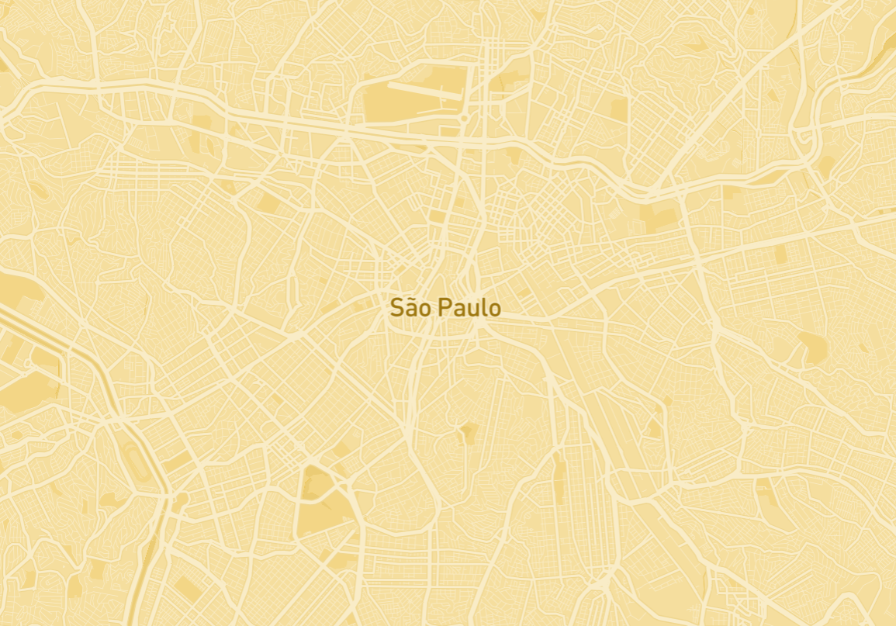
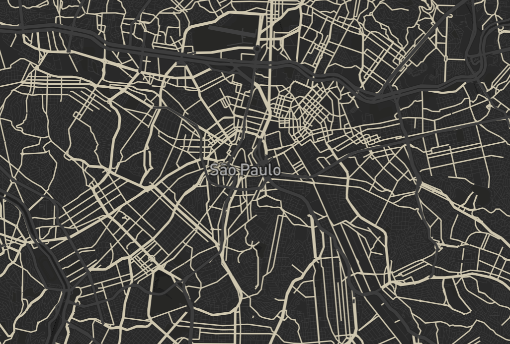
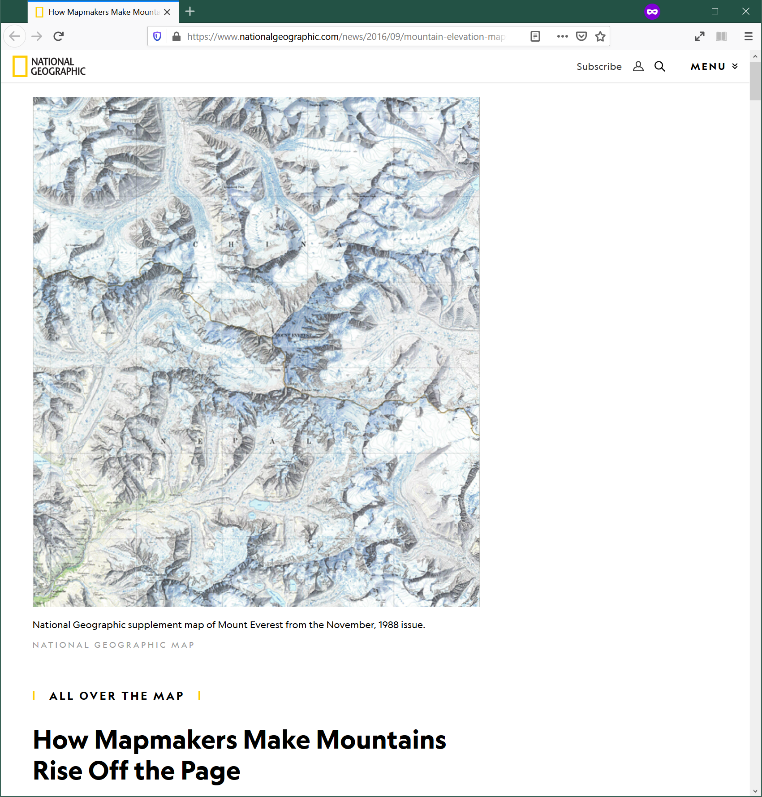
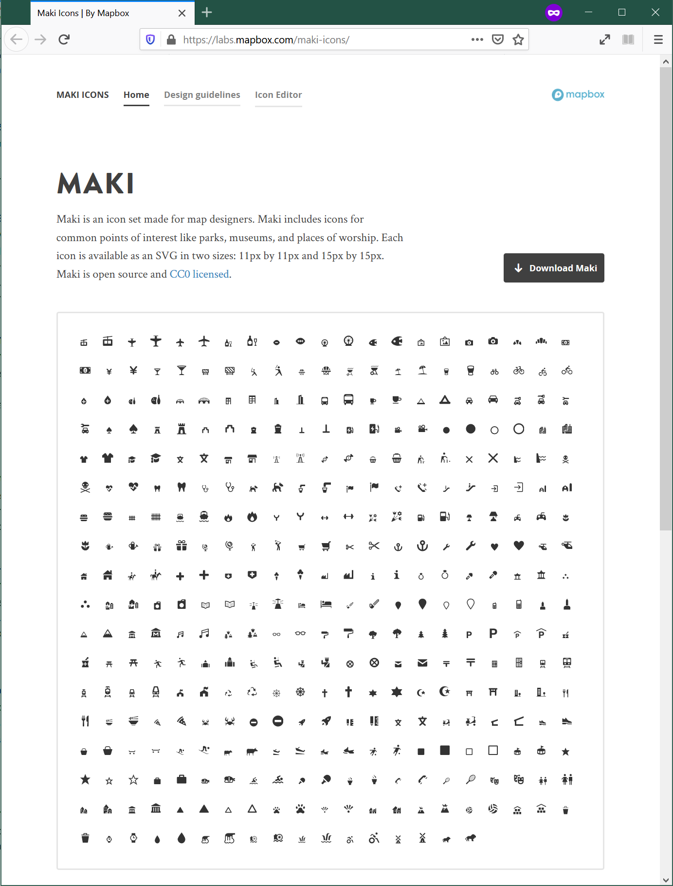
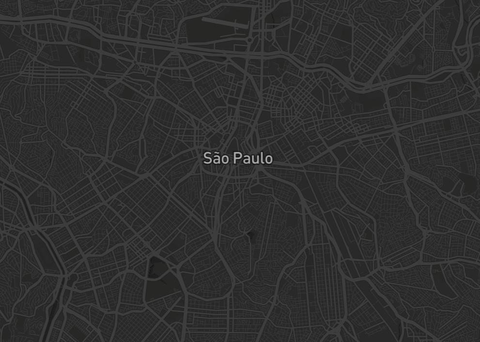
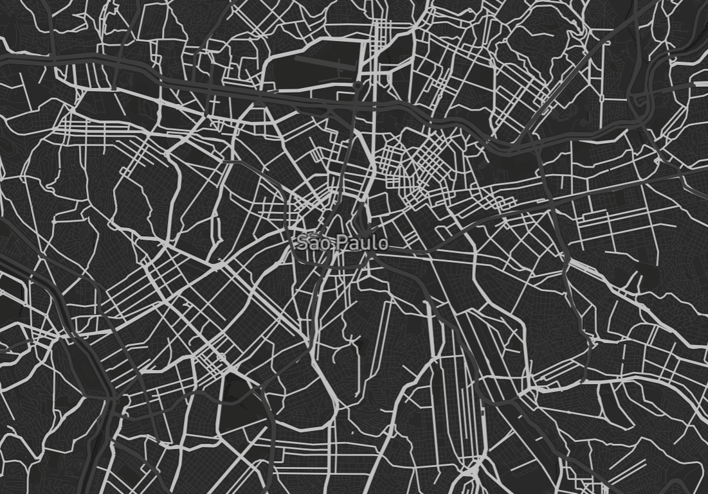
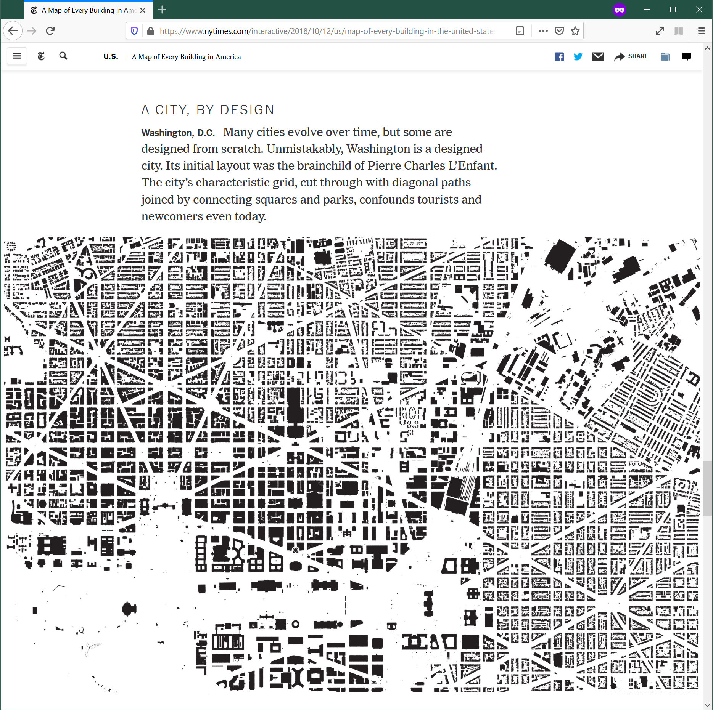
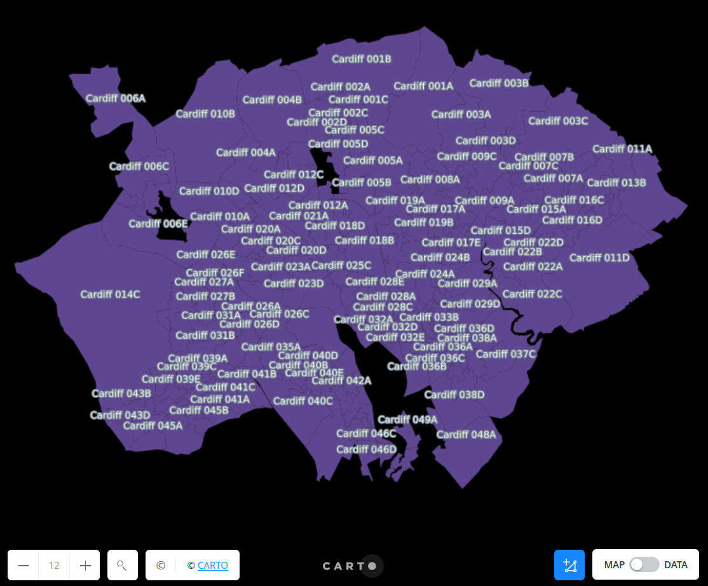

Web Mapping & Analysis
Map Design
Dani Arribas-Bel
Today
- Designing maps
- Design Elements
- Design Principles
Guide to Map Design
Designing Maps
What is design?
“To plan in the mind, intend”
Why is design relevant?
- Explicitly consider the purpose of your map
- Encode your goals in the final product
- Influence decisions along the map making process
How to think about design?
- Elements: building blocks
- Principles: how to combine them
Design Elements
Color
|
  |
Texture
|
 URL: Nat. Geo.
|
Labelling/typography
|

|

Iconography/markers
|
 URL: Mapbox
|
Design Principles
Contrast
|
  |
|
Visual Hierarchy
- Priority order
- Foreground Vs Background
- How much each aspect is “abstracted”
Visual Hierarchy: Content
|
 |
|
Visual Hierarchy: Context
|
|
|
Density
|

|
|
Legibility
- Context-dependent
- Combination of iconography, typography, proximity of features, etc.
Other considerations
Projections
|
|
How do you want to be wrong about the Earth? Source: XKCD |

Legend & other elements
Do you really need it?
- Auxilliary elements: legend, North arrow, scale…
- May improve legibility, but also clutter
- Sometimes, it is required (e.g. scientific publications)

Web Mapping & Analysis by Dani Arribas-Bel is licensed under a Creative Commons Attribution-ShareAlike 4.0 International License.
Web Mapping & Analysis
Map Design
Dani Arribas-Bel